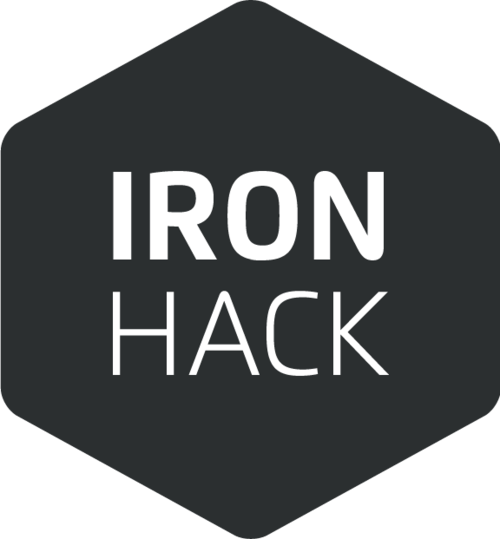

<div class="parent">
    <div class="child">

      <h3>Sobre Bremen.io</h3>
      <p>Bremen.io es un proyecto creado durante el tercer y último módulo del Bootcamp de <b>Ironhack Madrid</b>. Para este proyecto se han usado <b>Javascript</b>, <b>Typescript</b>, <b>Angular2</b>, <b>AngularCli</b>, <b>NodeJS</b> y <b>MongoDB</b> entre otras tecnologías y dependencias. </p>
      <br>
      <p>Quiero dar las gracias al equipo de <b>Ironhack</b> por el apoyo durante el Bootcamp y sus consejos para mejorar como aprendiz de programador,<br> a <b>Marc Pomar</b> y al equipo de <b>TA's</b> por todo lo que me han permitido aprender de ellos, y a mis <b>compañeros</b> del Bootcamp <b>Enero-Marzo 2018</b> por las ideas, pistas y risas que hemos compartido</p>
      <br>
      <p>Y por supuesto, un extra de gratitud a <b>Yaiza García</b> por la supervisión y paciencia durante este proyecto y a <b>Sébastien del Mestre</b>, con quien creé la primera versión de esta web.</p>
      <div class="images">
        
        
      </div>
    </div>


</div>
    